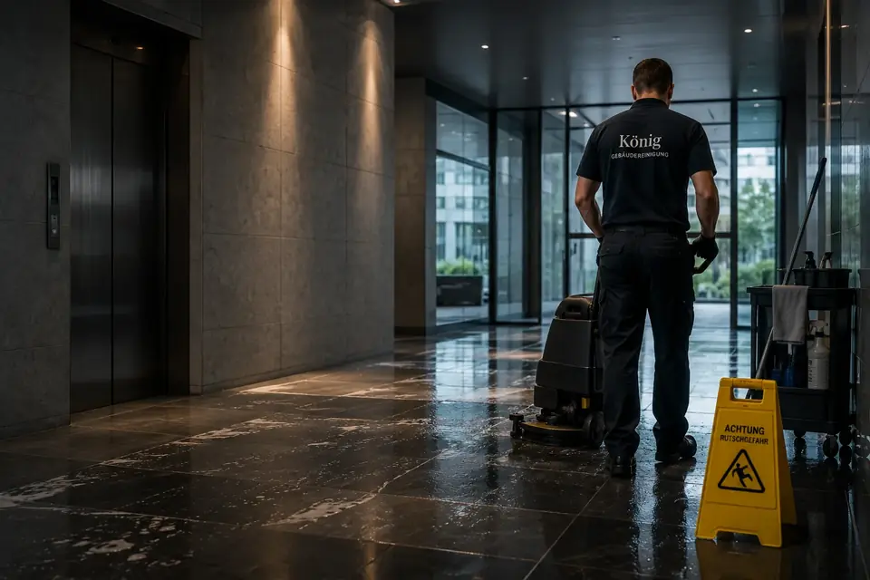

Über uns
Gebäudereinigung aus Würzburg, persönlich geführt
König Gebäudereinigung ist ein inhabergeführter Reinigungsbetrieb aus Würzburg. Wenn Sie anrufen, sprechen Sie mit dem Inhaber selbst.
Wie alles angefangen hat
König Gebäudereinigung hat als Familienbetrieb angefangen und ist Schritt für Schritt gewachsen. [PERSÖNLICHE ANEKDOTE: Wann und warum der Betrieb gegründet wurde und wie Leart Spahiu dazugekommen ist] Heute reinigen wir Büros und Praxen, Studios und Gewerbeflächen sowie Treppenhäuser in Würzburg und im Umland.
Geführt wird das Unternehmen von Leart Spahiu. Er kennt die Objekte seiner Kunden, plant die Einsätze und ist selbst erreichbar, wenn etwas zu klären ist. Genau deshalb arbeiten viele Kunden lieber mit einem kleineren Betrieb als mit einer großen Zentrale.

Was uns wichtig ist
Wir versprechen nur, was wir auch halten können. Passt etwas nicht in unser Angebot, sagen wir das vorher und nicht erst, wenn es schiefgegangen ist.
Gründlich heißt für uns auch die Ecke hinter der Tür und die Unterseite vom Waschbecken, also die Stellen, an denen man nicht sofort hinschaut. [PERSÖNLICHES DETAIL: Ein Beispiel von Leart Spahiu, worauf er bei einer Reinigung immer zuerst achtet]
In Ihren Räumen bewegen wir uns wie Gäste. Unterlagen, Bildschirme und persönliche Sachen bleiben unberührt, egal ob es um eine kleine Kanzlei oder ein ganzes Bürogebäude geht. Und für jedes Objekt gibt es eine Person, die dafür verantwortlich ist, Lob und Kritik kommen also direkt bei ihr an.
Für wen wir arbeiten
Unsere Kunden sind Unternehmen, Praxen, Studios und Hausverwaltungen in Würzburg und Umgebung. Die Objekte könnten unterschiedlicher kaum sein, erwartet wird aber überall dasselbe: Die Räume sollen verlässlich sauber sein, ohne dass sich im Betrieb jemand darum kümmern muss.
Kleinere Betriebe schätzen vor allem, dass sie bei uns direkt mit dem Inhaber sprechen. Wer mehrere Objekte betreut, etwa eine Hausverwaltung, hat für alle Häuser denselben Ansprechpartner. Ein einzelnes Treppenhaus bekommt dabei dieselbe Sorgfalt wie eine ganze Bürofläche.
Unternehmen und Büros
Vom kleinen Büro mit wenigen Arbeitsplätzen bis zur Bürofläche über mehrere Etagen.
Arzt- und Therapiepraxen
Reinigung nach dem Hygieneplan der Praxis und außerhalb der Sprechzeiten.
Studios und Gewerbeflächen
Räume mit viel Publikumsverkehr, in denen der erste Eindruck zählt.
Hausverwaltungen und Eigentümer
Treppenhäuser, Eingänge und Gemeinschaftsflächen in Wohnanlagen.

Wie wir arbeiten
Am Anfang steht immer ein Gespräch über Ihr Objekt. Welche Räume gibt es, wie werden sie genutzt, wann darf gereinigt werden, und was hat Sie bisher gestört? Daraus entsteht ein Leistungsverzeichnis, in dem jede Aufgabe mit ihrem Intervall steht. Das ist dann die gemeinsame Grundlage für Sie und für uns.
Läuft die Reinigung, bleiben wir in Kontakt. Wenn sich Ihr Bedarf ändert, weil ein Team wächst oder ein Raum umgebaut wird, passen wir den Plan an, und zwar ohne lange Abstimmungsrunden. Gereinigt wird auf Wunsch auch vor Arbeitsbeginn oder nach Feierabend, wenn niemand mehr in den Räumen ist. Wie wir dann hineinkommen, halten wir schriftlich fest.
Wer bei uns anruft, erreicht den Menschen, der den Einsatz plant, und bekommt eine Antwort, ohne dass die Anfrage erst durch mehrere Abteilungen wandert. Unser Einsatzgebiet ist Würzburg mit allen Stadtteilen und die Region drumherum. Liegt Ihr Objekt weiter draußen, sprechen Sie uns einfach an.
So läuft die Zusammenarbeit ab